Below, we provide examples of the proposed TRIA and baseline MelodyFlow systems converting sound gestures to drum recordings. Given a timbre prompt specifying the desired drum sound (an audio recording for TRIA, a text description for MelodyFlow) and a rhythm prompt specifying the desired rhythm, we present the outputs of the proposed and baseline systems. In the corresponding plots, timbre is illustrated by a spectrogram (top) and rhythm is illustrated by dualized rhythm features (bottom). In each row, the rhythm prompt is fixed across all evaluated systems, the audio timbre prompt is fixed across all TRIA variants, and the text timbre prompt is fixed across all MelodyFlow variants. Audio and text timbre prompts are sampled independently and are not meant to correspond.
| Index | Timbre prompt | Rhythm prompt | TRIA (2 bands) | TRIA (2 bands, non-adaptive) | TRIA (1 band) | TRIA (3 bands) | TRIA (4 bands) | Timbre prompt (text) | MelodyFlow (timestep = 0.0) | MelodyFlow (timestep = 0.1) | MelodyFlow (timestep = 0.2) |
|---|---|---|---|---|---|---|---|---|---|---|---|
| 1 | | | 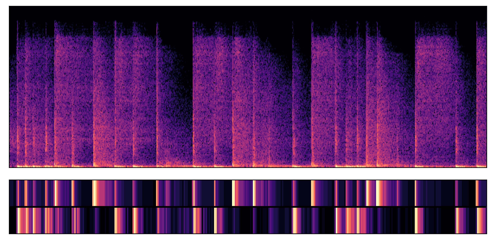 | | | | | spacious, reverberant acoustic drum set | | | |
| 2 | | 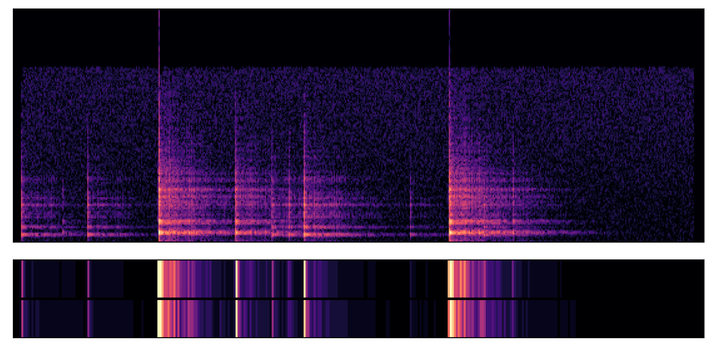 | | | | | | balanced, neutral acoustic drum timbre | | | |
| 3 | | | | | | | | smooth, polished synthetic drum textures | 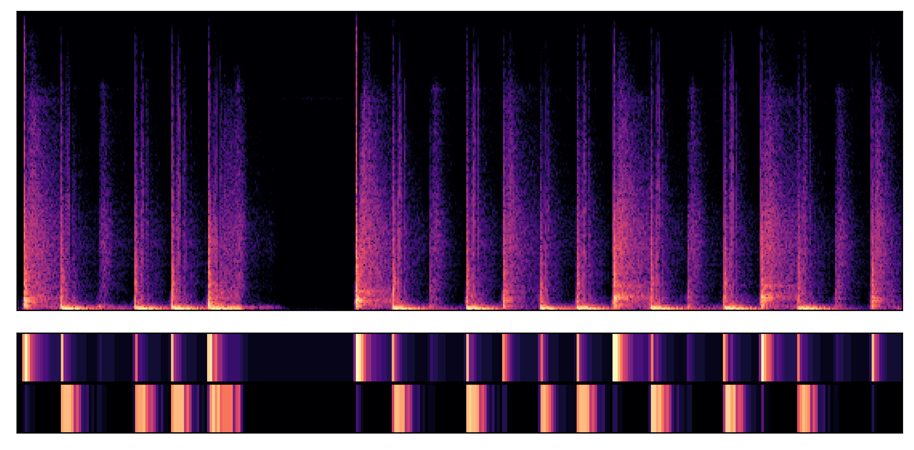 | | 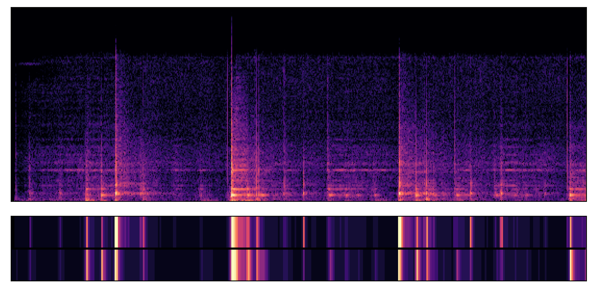 |
| 4 | | | | | | 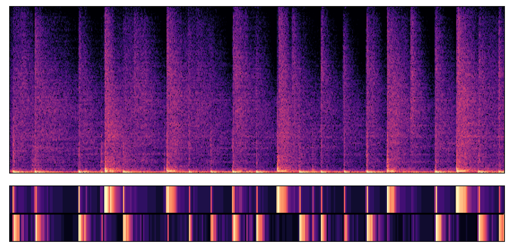 | | vibrant, digital drum sounds with fast decay | | | |
| 5 | | | 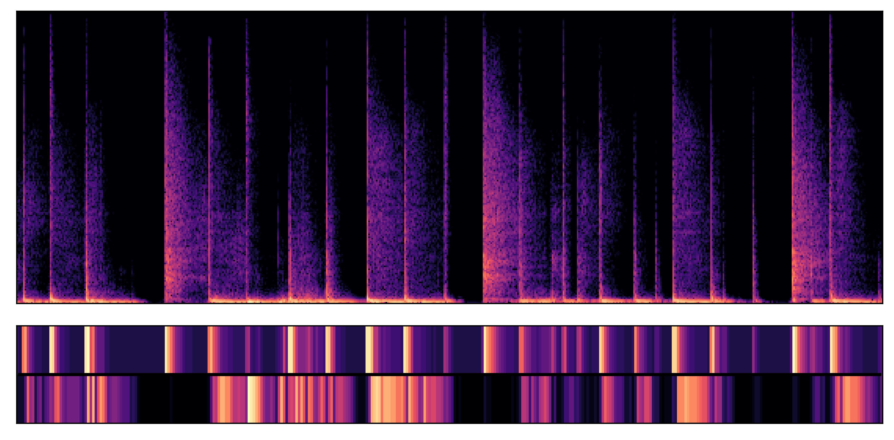 | | 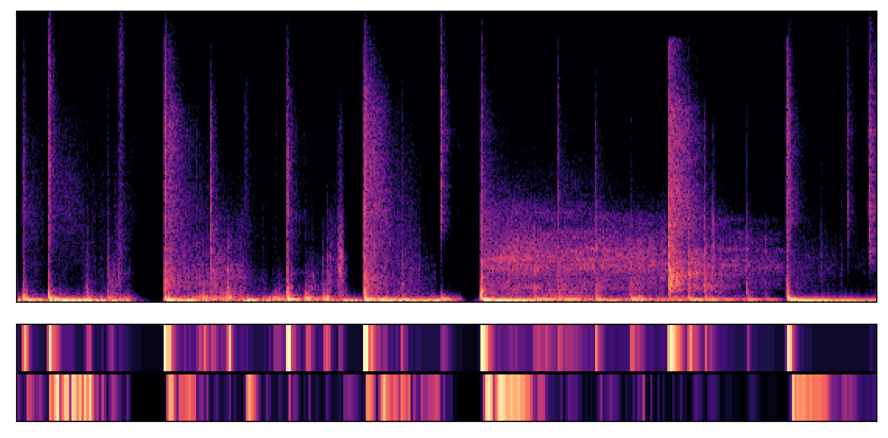 | | | boomy, cavernous acoustic drum ambience | | | |
| Index | Timbre prompt | Rhythm prompt | TRIA (2 bands) | TRIA (2 bands, non-adaptive) | TRIA (1 band) | TRIA (3 bands) | TRIA (4 bands) | Timbre prompt (text) | MelodyFlow (timestep = 0.0) | MelodyFlow (timestep = 0.1) | MelodyFlow (timestep = 0.2) |
|---|---|---|---|---|---|---|---|---|---|---|---|
| 1 | 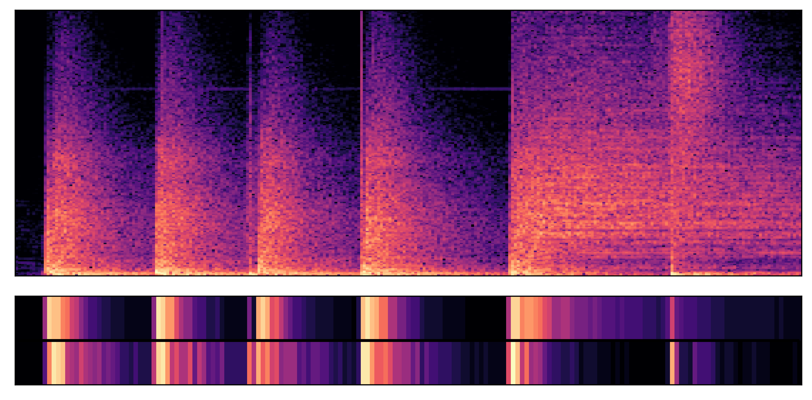 | 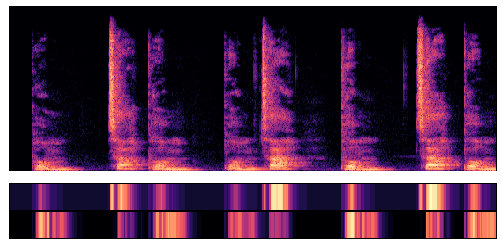 |  |  | 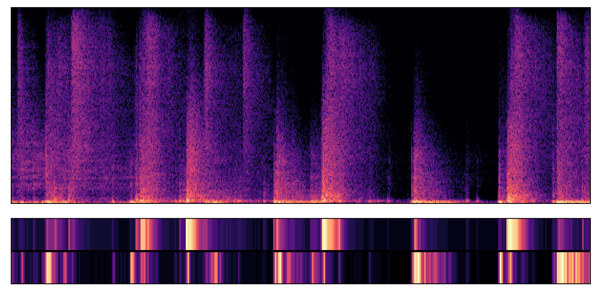 | 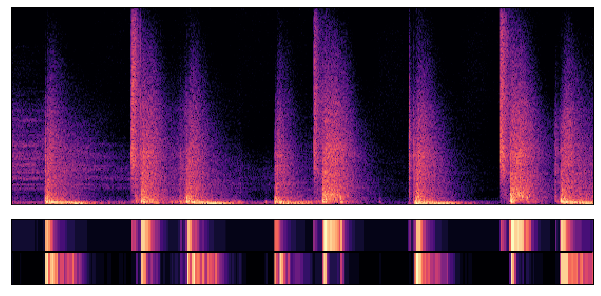 | rounded, organic electronic drums |  |  | ||
| 2 |  |  |  |  |  |  | subtle, understated acoustic drums |  |  |  | |
| 3 | 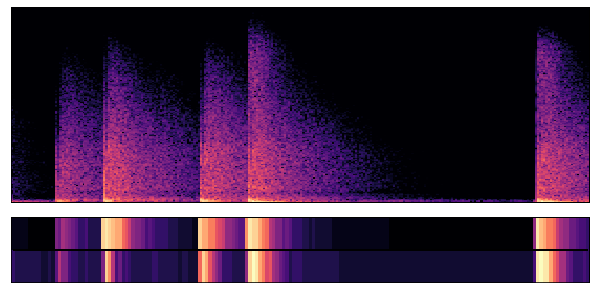 |  |  |  |  |  |  | dense, compressed electronic drum timbres |  |  | |
| 4 |  |  |  |  |  | 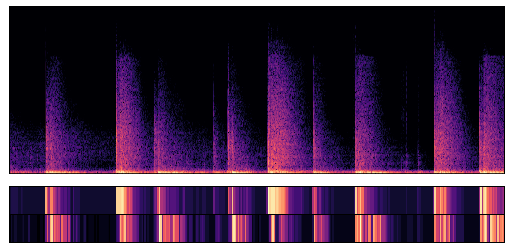 |  | raw, gritty analog-sounding drum machine |  | 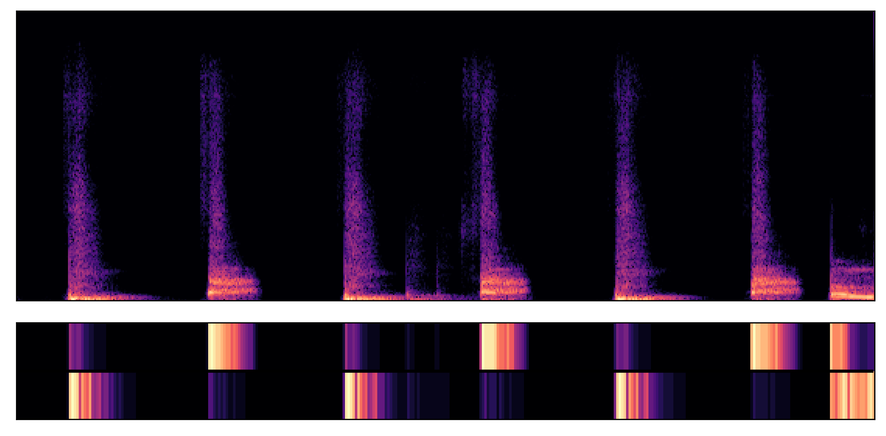 | 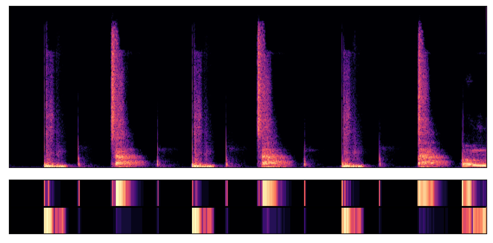 |
| 5 |  |  | 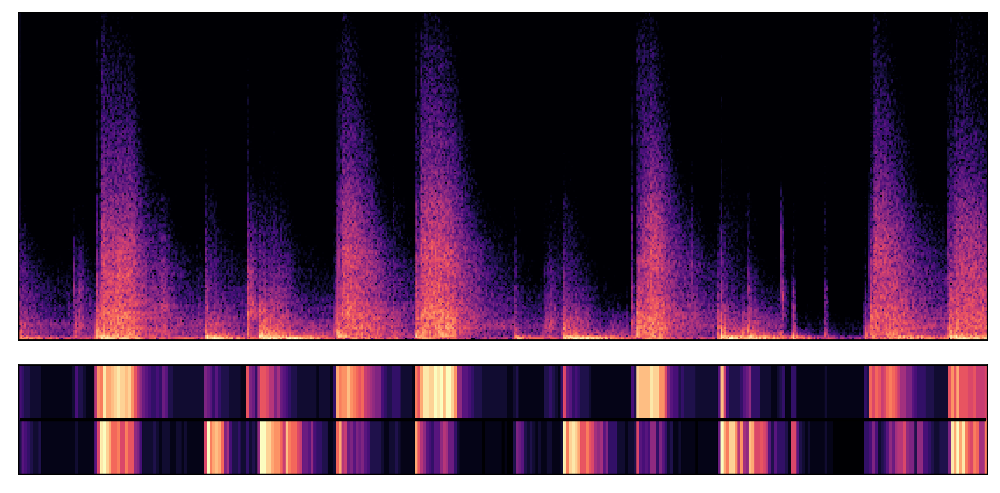 | 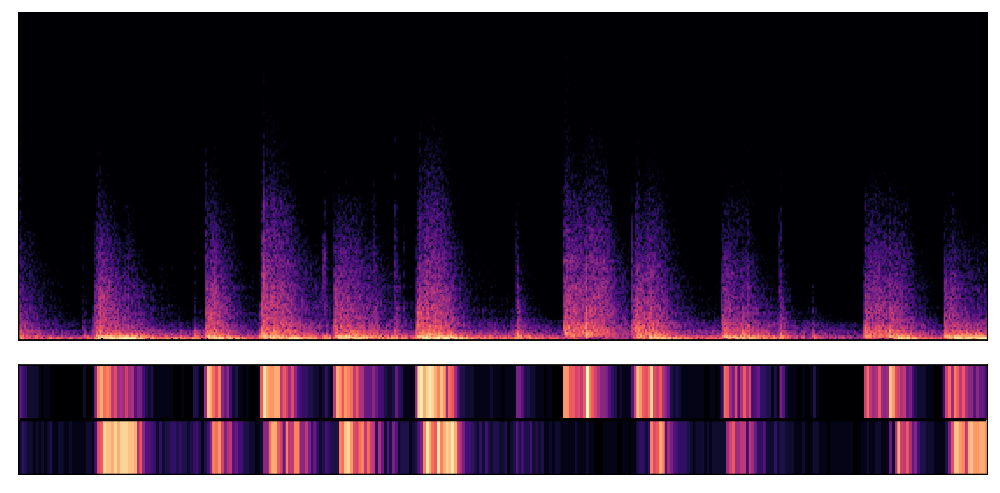 |  |  |  | crisp, biting electronic drum samples |  |  |  |
Below, we provide the 50 text timbre prompts used for our objective evaluation, and the 8 text timbre prompts used for our subjective evaluation.
Timbre prompts were generated using GPT-4.5 with the following prompt: "Generate 50 short descriptions of the timbre of a drum kit recording. The drum kit may be acoustic or electric, natural or synthetic. Each description should be formatted as a short sentence or phrase, e.g. "a crisp, bright acoustic drum kit". Try to make each description distinct."
Timbre prompts describing acoustic drum kits were selected from the above set.